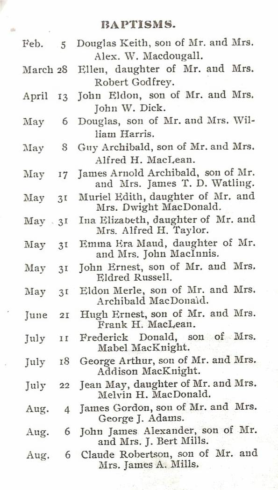
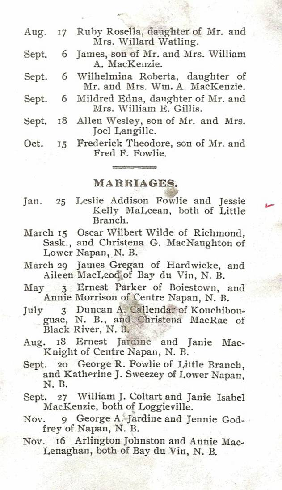
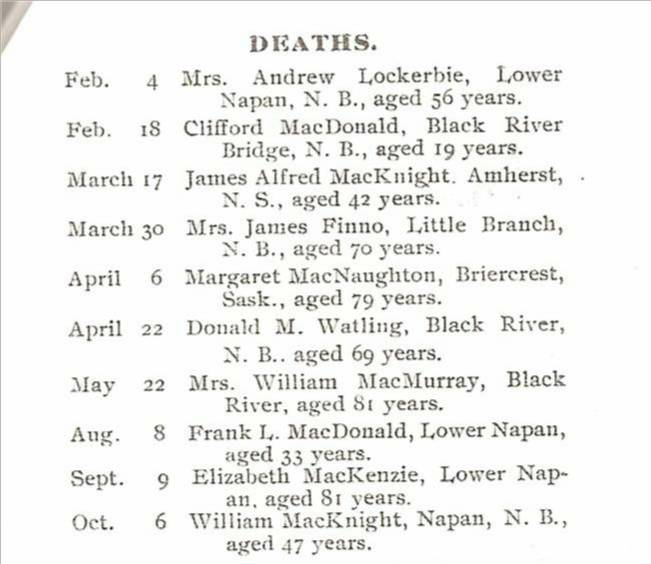

The Family Chronicle
No. 138 April 29, 2006
____________________________________________________________________
St. Stephen’s Statistics - 1922

Music at MRHS
Among my papers, I came across a couple of scribblers. One had Christmas poems which, as I recall, I had my sister Elinor copy for me so I would have them for school closings.
Another had some of the songs we sang at MRHS. Miss MacMillan, as I recall, taught music and we would gather probably on Fridays in the auditorium and she would lead us in song. I cannot recall all of them but I do remember Grandfather’s Clock, Don’t Fence Me In, Anchors Aweigh, O Valiant hearts, Mother Machree, Big Rock Candy Mountain, It’s Nice to Get Up in the Morning, John Pee the Spanish Cavalier, Bonnets of Bonnie Dundee, Solomon Levi and little Brown Church in the Wildwood.

St. Stephens Deaths 1922

Curry Comb
Who remembers a curry comb? It was a metal brush used for grooming horses
Haying time
An old clipping
Having spent my life in education, I was called on many times to speak at graduation exercises. At such times, I often compared getting an education to constructing a building. I did not realize how long I had done this until I came across my remarks to the graduating class of 1954 or 1955. Here is a quotation I used; unfortunately, I do not know the source.
“Life is A Building
Life is a building. It rises slowly day by day, through the years. Every new lesson we learn lays a block on the edifice which is rising silently within us. Every experience, every touch of another life on ours, every influence that impresses us, every book we read, every conversation we have, every act of our commonest days add something to the invisible.
---Selected
MRHS Shop budget
If there are any “shop” teachers among my readers, they may get a charge out of this item.
I enjoyed my shop classes at MRHS and later decided to become a shop teacher. I completed a two-year training program at the New Brunswick Technical Institute in 1951 and returned to the MRHS and, among other things, taught shop. (As I recall, my salary that year was $2,400 which was a princely sum compared to my first two years). Most of my fellow students moved to schools with shop areas of 3-4,000 square feet; the shop at MRHS was a large classroom – perhaps 800 square feet.
Among my papers, I found my shop budget at MRHS for 1951-52 which was:
Woodworking
Lumber $60
Plywood $25
Hardwood $20
Finishing material $20
Hardware $20
Drafting
10 Tee Squares $30
¾ inch drafting boards $10
Paper, etc $15
Electrical
Tools $25
Wire $25
Bells and buzzers $10
Receptacles, switches, etc $30
Bench grinder $100
The Family Chronicle (Copyright) is an occasional newsletter published by Don Glendenning and posted on the family website. It is intended to share information about my family, community and the times in which I grew up. While every effort is made to be accurate, errors are likely to occur. Comments, enquiries and information may be sent to 62 Queen Elizabeth Drive, Charlottetown, PEI, C1A 3A9. Tel: 902 892 5859. Email: don@glendenning.net Web: www.glendenning.net/don